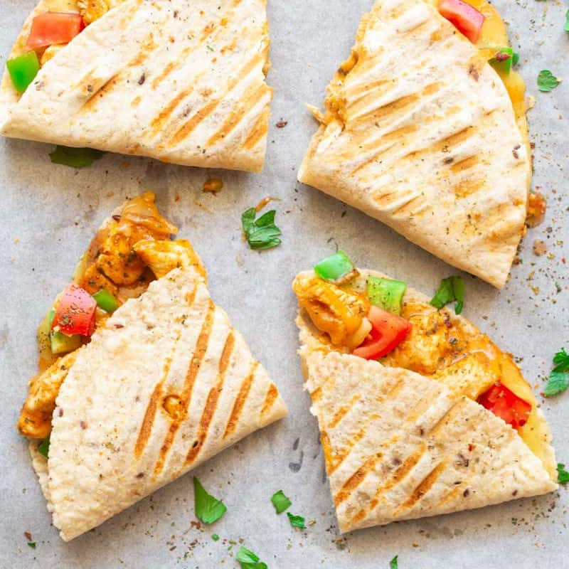

Quesadillas

Quesadilla Recipe
Quesadillas are a quick an easy meal you can cook at any time. It's a meal that can be easily altered to your taste!
You have to choice of adding chicken bits, ground beef, steak or beans! Pair it with any choice of Salsa you like or simply eat it alone just cheese.
Ingredients
- Can use a pan to heat up Tortillas, but would advise a Comal if you have access to one
- Tortilla (you may choose either flour or corn)
- Shredded cheese of your choice
- Optional:
- Protein: Chicken, ground beef, steak or beans
- Salsa of your choice
Steps to make Quesadilla
- Start warming up tortillas on one side.
- Flip tortilla when its ready and add the shredded cheese and fold in a shape of a taco.
- You may flip the quesadilla to avoid burning the tortilla as you wait for cheese to melt.
- Plate the quesadilla once it's ready.
- (Optional) If you have cooked protein you may add them in the quesadilla.
- You can add the Salsa of your choice or eat without Salsa.
- Enjoy!